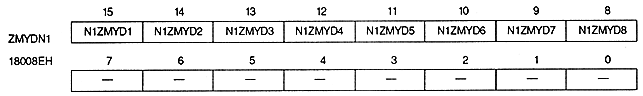
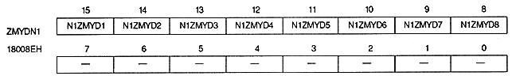
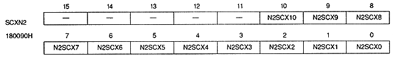
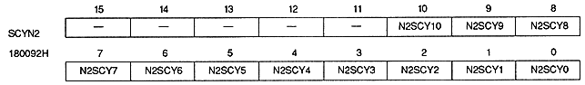
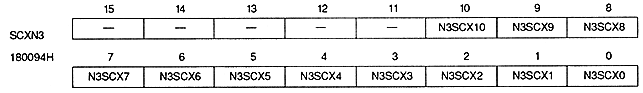
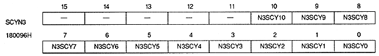

Return to previous page ｜ Return to menu ｜ Go to next page
Coordinate increment (NBG1, vertical integer part)

Coordinate increment (NBG1, vertical fraction)

Screen scroll value (NBG2, horizontal direction)

Screen scroll value (NBG2, vertical direction)

Screen scroll value (NBG3, horizontal direction)

Screen scroll value (NBG3, vertical direction)

Screen scroll value bit : Scroll bit
- (N0SCXI10~N0SCXI0, N0SCXD1~N0SCXD8, N0SCYI10~N0SCYI0, N0SCYD1~N0SCYD8, N1SCXI10~N1SCXI0, N1SCXD1~N1SCXD8, N1SCYI10~N1SCYI0, N1SCYD1~N1SCYD8, N2SCX10~N2SCX0, N2SCY10~N2SCY0, N3SCX10~N3SCX0, N3SCY10~ N3SCY0)
∙ Specify the horizontal and vertical screen scroll values (coordinate values) for each normal scroll screen.
Return to previous page ｜ Return to menu ｜ Go to next page